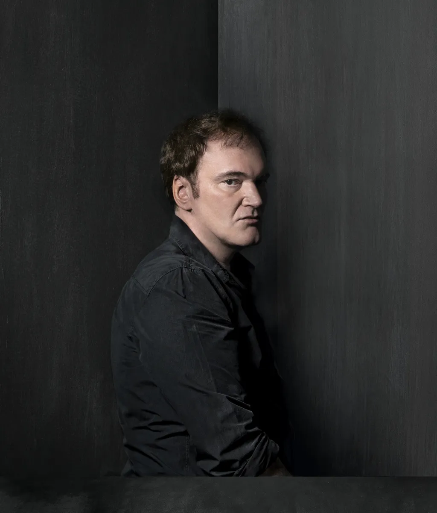

Quentin Tarantino
Quentin Jerome Tarantino (Knoxville, 27 de março de 1963) é um
realizador, roteirista, produtor, ator, diretor
de fotografia e crítico de cinema americano. É vencedor de
dois Oscars de Melhor Roteiro Oiginal e
foi eleito o 19° maior diretor de cinema dos últimos 25 anos
segundo o levantamento da Quartz através do
Metacritic.
Alcançou a fama
rapidamente no início da década de 1990 por
seus roteiros não lineares, uso de violência gráfica,
diálogos ricos e diversos, com uma mistura irônica de
humor e violência. Ele é amplamente considerado um
dos mais importantes cineastas de sua geração.

KILL BILL VOL.1
A ex-assassina conhecida apenas como Noiva acorda
de um coma de quatro anos decidida a se vingar de
Bill, seu ex-amante e chefe, que tentou matá-la no
dia do casamento. Kill Bill: Volume 1,
lançado em 2003.
Neste filme
dirigido por Quentin Tarantino teve três premiações
MTV Movie Awards: Melhor Luta, MTV Movie Award:
Melhor Vilão, MTV Award: Melhor atriz.

PULP FICTION
Pulp Fiction - Tempo de Violência (1994): Vincent
Vega (John Travolta) e Jules Winnfield (Samuel L. Jackson) são
dois assassinos profissionais trabalham
fazendo cobranças para Marsellus Wallace (Ving
Rhames), um poderosos gângster. Vega é forçado a sair com a
garota do chefe, temendo passar dos limites; enquanto
isso, o pugilista Butch Coolidge (Bruce Willis) se
mete em apuros por ganhar luta que deveria perder.
Quentin Tarantino teve um papel
fundamental neste filme, ele atuou como diretor, roteirista e até
fez uma breve participação como ator. Fez uma
direção única que mistura narrativa não linear,
diálogos marcantes, humor, cenas de violência estilizadas e
homenagens à cultura pop.

DJANGO LIVRE
No sul dos Estados Unidos, o
ex-escravo Django faz uma
aliança inesperada com o caçador de recompensas
Schultz para perseguir os criminosos mais
procurados do país e resgatar sua esposa
de um fazendeiro que força seus escravos a entrarem
em competições mortais.
Quentin Tarantino dirigiu o filme,
misturando faroeste com vingança e crítica social. O
diretor também teve um papel ativo na
escolha do elenco e na direção dos atores, o que
contribuiu para o sucesso do filme.
Neste Filme, o diretor ganhou o
Oscar de
Melhor Roteiro Original (Quentin Tarantino) e o filme
recebeu o Oscar de
Ator Coadjuvante (Christoph Waltz).
Outros Filmes